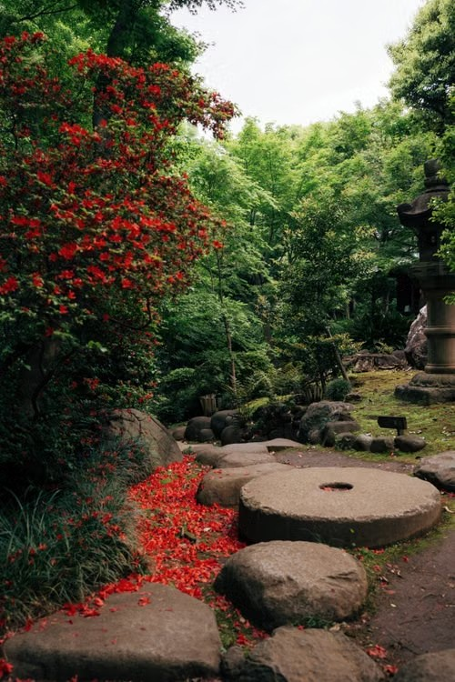

01 / GARDEN
庭・外まわりを整える。
暮らし方や使い方に合わせて、庭や外まわりを考えるサービスの表示例です。植栽と小道、過ごす場所のつながりを写真とともに案内します。
庭づくり ／ 外構のご相談
窓の向こうで、葉がゆれる。
季節がめぐり、庭の表情も変わる。
そんな小さな変化を楽しめる場所へ。
こずえの庭舎は、架空の造園会社です。
庭づくりと緑のお手入れを、
やさしく案内するホームページをご提案します。
暮らし方や使い方に合わせて、庭や外まわりを考えるサービスの表示例です。植栽と小道、過ごす場所のつながりを写真とともに案内します。
庭づくり ／ 外構のご相談庭木や植栽の維持管理を紹介する例です。日々のお手入れや、季節に合わせて見直したいことを、相談前にわかるよう整理します。
庭のお手入れ ／ 植栽管理公園や施設の緑化・維持管理を紹介する例です。場所の役割や使う人のことを踏まえ、相談内容に合った案内へつなげます。
公園緑化 ／ 敷地の維持管理写真はフリー素材によるイメージです。実際の施工例・所有する庭園ではありません。
場所や気になること、希望する使い方をお聞きする流れです。
庭や敷地の状況を確認し、必要な内容を整理する案内です。
作業や庭づくりの方針を、わかりやすくお伝えする構成です。
架空の造園会社の表示例です。
実在する会社ではありません。
ご相談への案内を体験するサンプルです。